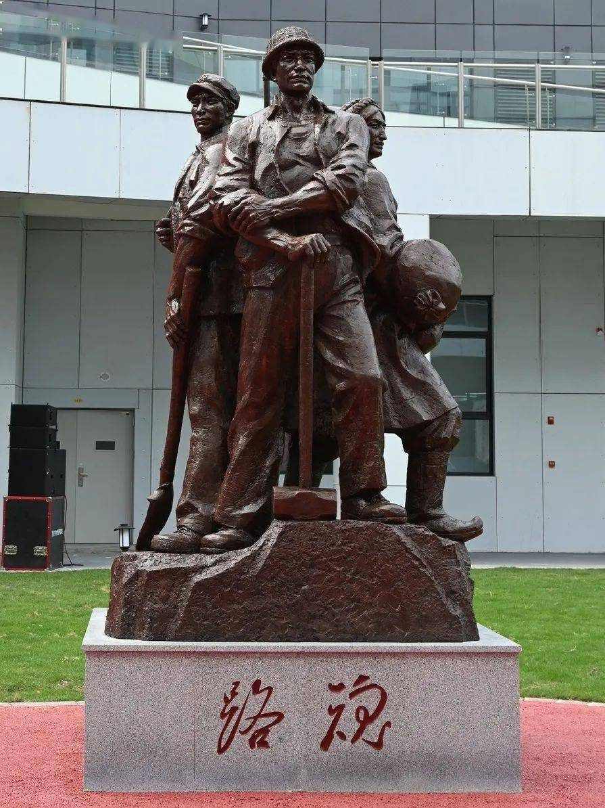

皇冠馆内，分为序厅、历史抉择、 天路长歌、薪火相传、尾厅、 文创区六个部分，收藏了川藏 公路建设70多年以来的新老 照片、筑路工具、生活用品、 相关报纸、书籍、画报、徽章、 旗帜等
皇冠馆内，分为序厅、历史抉择、 天路长歌、薪火相传、尾厅、 文创区六个部分，收藏了川藏 公路建设70多年以来的新老 照片、筑路工具、生活用品、 相关报纸、书籍、画报、徽章、 旗帜等 壁画全景展示川藏公路艰苦卓绝的 建设过程、充分体现“两路” 精神历久弥新的隽永内涵和 穿越时空的时代价值。
壁画全景展示川藏公路艰苦卓绝的 建设过程、充分体现“两路” 精神历久弥新的隽永内涵和 穿越时空的时代价值。 铜器四川是川藏公路的核心区域 和“两路”精神形成的重要 发源地。川藏公路博物馆于 年初启动建设，建成开放后
铜器四川是川藏公路的核心区域 和“两路”精神形成的重要 发源地。川藏公路博物馆于 年初启动建设，建成开放后 报纸馆内，分为序厅、历史抉择、 天路长歌、薪火相传、尾厅、 文创区六个部分，收藏了川藏 公路建设70多年以来的新老 照片、筑路工具、生活用品、 相关报纸、书籍、画报、徽章、 旗帜等
报纸馆内，分为序厅、历史抉择、 天路长歌、薪火相传、尾厅、 文创区六个部分，收藏了川藏 公路建设70多年以来的新老 照片、筑路工具、生活用品、 相关报纸、书籍、画报、徽章、 旗帜等 农具全景展示川藏公路艰苦卓绝的 建设过程、充分体现“两路” 精神历久弥新的隽永内涵和 穿越时空的时代价值。
农具全景展示川藏公路艰苦卓绝的 建设过程、充分体现“两路” 精神历久弥新的隽永内涵和 穿越时空的时代价值。- 
路魂四川是川藏公路的核心区域 和“两路”精神形成的重要 发源地。川藏公路博物馆于 年初启动建设，建成开放后